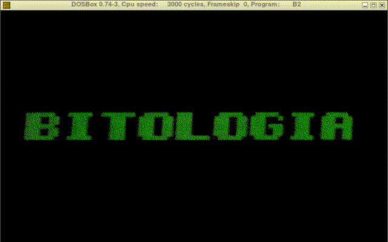
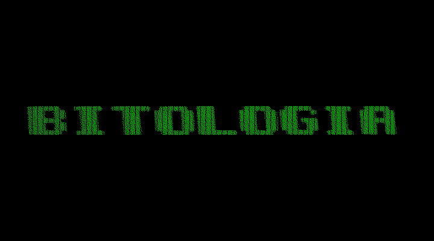

updated at 2021-02-08 by wojtek at bitologia.org (index)
A short movie can be prepared out of thirteen frames with the content representing the symbol of Bitologia:
BF01.gif:
BF02.gif:
BF03.gif:
...
BF13.gif:
Each 640×48 px GIF is transformed in GIMP to a raw .data file with a sequence of RGB triplets cast to a 1-bit-colour image. This corresponds to three lines of 80 ASCII characters in the 0x03 DOS text mode.
The checkered pattern
guides the eye for eighty 8×16 pixel patterns in three rows over the lettering in the background.
Shell script invokes a C procedure which appends thirteen segments of DB-data to a core that makes a ready-to-be-compiled assembly file. The result is roughly like:

Note that DOSBOX handles text mode without additional vertical lines between every two inner columns. This is not the case when using real VGA standard - see the picture (grabbed by ScreenThief - hence only static presentation) below. Note, also that the actual resolution is 720×400 (GIF from DOSBOX was rescaled to 640×400).
